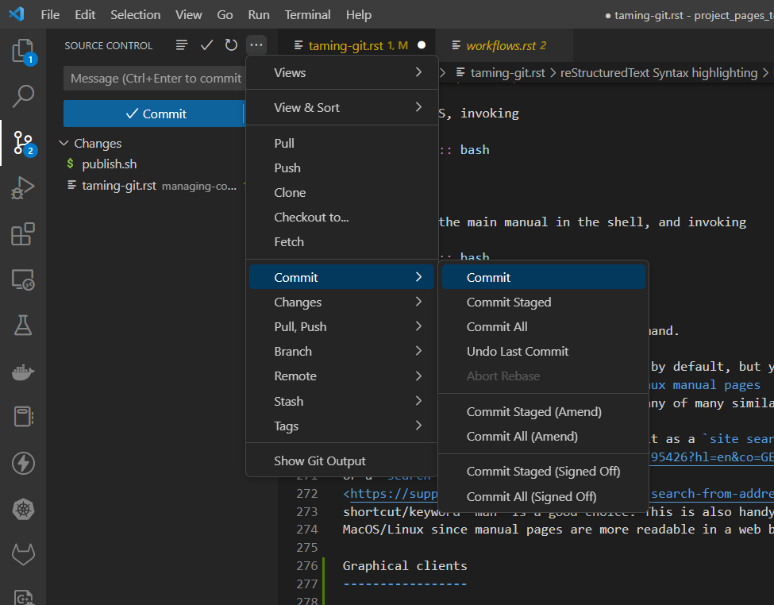

Taming Git
Basic Git use can be quite simple. You most likely have a Git client built into the integrated development environment of your programming language of choice. Common operations are then a few clicks away. Also, the GitHub and GitLab cloud platforms allow repositories hosted on them to be manipulated through a web browser.
However, for non-trivial workflows you will need good sight on what Git does and require a way to access more advanced features. It is therefore highly recommended to install the full-featured official Git command line client. When you use Linux or MacOS, you can install it via a package manager. A Windows installer is available on the Git website. Another reason to have the official Git client installed is that when you search the Internet for information on Git, the given solutions and examples mostly reference it and rarely other clients.
Learning about all the features that Git has is a major task and hence is not advisable. Already having some idea of what feature you need, even if you have never used it and do not know what it is called, is very useful. It is also helpful to then have an easy way to find out how to invoke the feature. This page gives you a strategy for attaining both.
The places perspective
Looking at Git from the perspective of the various places where Git can hold copies of the file tree under management requires familiarity with relatively few concepts. Gaining that perspective will give you a good idea of what is going on and needs doing: you will be aware of where files and changes are located, where they can go, and why you might want that. These places are named and explained below. Memorize these.
Repository
A Git repository holds the history of one or more trees of files as a series of immutable commits. It encodes files in an efficient storage format and can be connected to repositories located elsewhere to synchronize content.
Local repository
A Git repository located on your local machine. Since you own the repository you can structure it and connect it to other repositories as you see fit. You can replace (not change) commits in your local repository to cover up mistakes before synchronizing to a remote repository that others can see.
Remote repository
A Git repository located on a remote server, typically accessed by multiple users for collaborating on making and sharing changes. Accessed via a URL for one of the supported protocols. The server may require authentication.
Upstream repository
The remote Git repository that holds the canonical/validated/verified/official version of the files. Significant changes made relative to connected repositories will flow here, possibly after passing review and acceptance. The upstream repository is the focal point of the community and hence tends to be hosted on GitHub or another cloud platform with attached issue tracking and other collaboration services.
So why is it called “upstream”? Well, though the significant changes flow upstream, most of the synchronization flows the other way: the community wants to stay in-sync with the latest and greatest official versions and pulls frequently from the upstream repository.
Branch
A Git repository can hold multiple file trees that evolve in parallel. These are called branches. This may sound confusing: how can trees be branches? The reason is that the word “branch” refers to a bifurcation in the graph of commits, not to a subdirectory of a file tree.

Up until the bifurcation, the branch and its parent branch share the same commit history. After the bifurcation, they diverge with different commits made to each. Logically, a new branch is a copy of the parent branch, but no actual data needs to be copied to bifurcate the commit graph: branching is very cheap.
One reason for branching is to start a parallel track of development, for example to implement an experimental feature in code, or to adapt a dataset for an exceptional use case. You can also branch in support of a release workflow, branching from the main/master branch on a major release, and applying only commits that fix bugs to that branch, resulting in one or more minor/patch releases. There are many reasons to branch, and many workflows that can be enabled by that. To learn more, see the Branching Workflows section of the Pro Git book.
Commits made to one branch can be applied to another branch in the same repository thereby reducing divergence, for example to consolidate a feature developed in a feature branch into the main/master branch. This is called merging or, when preserving a linear history, rebasing. You can also be selective and cherry pick commits. Git offers advanced algorithms and assistance that make it practical to converge branches.
Workspace (aka Worktree or Working Directory)
A tree of files on your filesystem associated with a branch commit in a local repository. The files in the workspace are what you use or modify. Git will keep track of any modifications relative to this branch commit.
Note
You can associate additional workspaces with your local repository, for example to hold the content of different branches, but most common is to have a single workspace and switch it between branches.
Index (aka Staging Area)
The index is where you shortlist (stage) changes made in a workspace before committing them. This allows you to collect a subset of changes that belong together and can thereby more easily be reviewed, described with a commit message, and merged or rebased later.
When committing, the indexed changes are added as a new commit to the branch in the local repository associated with the workspace, and then the workspace is re-associated with this new branch commit: only the remaining changes will thereby show when having Git display what changed in the workspace.
Stash stack
The stash stack is where you can have Git stash uncommitted changes for later work. It is associated with a local repository. You can stash changes present in the workspace and index (staged changes) and later retrieve them.
Stashing allows you to quickly clean up your workspace without losing your changes: certain operations require a “clean” workspace (a workspace without changes relative to the branch). It also enables you to quickly stage and commit other changes first, and then return to the previously staged work.
You can add multiple stashes to the stack, and will typically retrieve them in reverse order.
Default places
When starting to work with a Git repository, it typically already exists on a remote server. You obtain a local copy of the remote repository by using the clone command. This will result in the following set of default places:
A local repository with a synchronization connection to the remote repository.
A single workspace holding the file tree matching the last/head commit of the main/master branch.
An empty index and stash stack.
This allows you to immediately get going with making changes or using the files.
The repository is held in a hidden .git subdirectory of the root of the
workspace.
Finding features
Memorizing the places explained in the previous section and their mutual relationships enables you to understand where files and changes are located and should go, in order to progress your workflow. You can then predict that there must exist Git features that do that or help out with that.
For example, you can infer that there must be ways to copy files from a repository to a workspace (checkout) and vice versa (commit); to synchronize from a local repository to a remote repository (push) and vice versa (fetch); to display changes (diff) and commits (log); to add changes to or remove them from the index or a stash; to list the contents of the index or stash stack; to branch and merge; and so on.
But how to find these predicted features?
The first step is to find out what the command that provides the feature is probably called. Some frequently used commands were already named in bold above. This handy interactive Git cheat sheet shows you Git commands operating between the places discussed above and thereby allows you to explore the command space from the places perspective. Once you have a good candidate for the command name, you can explore the detailed documentation or quickly display build-in help or a manual as detailed in the next section.
When in need of further guidance, you can easily find answers by searching with Google or Stack Overflow since the huge Git user base will no doubt have asked the particular question you have, and likely has linked or selected good answers to it.
To learn more, see the comprehensive introductory and reference videos, documentation, and even a book available on the Git website.
Built-in help and manuals
When you already know which command you need, but forgot the precise syntax or options, the official Git command line client offers built-in help. By invoking
git --help
you get get a list of common commands. By invoking
git <command> --help
you get the synopsis, description, and options of the given Git command.
On Linux/MacOS, invoking
man git
will display the main manual in the shell, and invoking
man git <command>
will show the manual of the given Git command.
On Windows such manuals are not available by default, but you can display them in your browser by searching the Arch Linux manual pages site, or any of many similar sites.
To make such a search quick, you can set it as a site search shortcut in Chrome, or a search keyword in Firefox. Using the shortcut/keyword “man” is a good choice. This is also handy when using MacOS/Linux since manual pages are more readable in a web browser than a shell.
Partial clone functionality
When using Git for managing data, repositories can get large. Using the Git LFS (Large File Storage) extension makes storing large files performant. But cloning a big repository can still take a lot of time, particularly when the repository is located remotely on the Internet. The reason is that Git repositories contain the complete history of all files, and this complete history is by default downloaded when running the Git clone command.
Fortunately, Git supports partial clone functionality that downloads only a subset of the files, and downloads further files only as needed on checkout.
Graphical interfaces
Most integrated development environments and many code editors allow you to perform Git operations via menus or buttons. For example, the image below shows the Git menu of Visual Studio Code.
{kind=link}
When you do most of your work in such an environment or editor, using the graphical interface is handy. Some graphical interfaces have very convenient support for merging and dealing with pull requests. But beware that not all Git functionality will be available, and that the examples that you can find online via a search engine are unlikely to show how to do something with the particular graphical interface that you are using. That is why you will still need the official Git client every now and then.
When you use several environments and editors and do not want to learn all the different graphical interfaces, using the official Git client by default may be preferable.